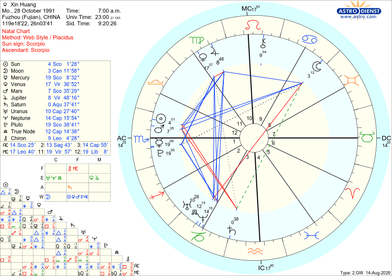

星盘最上方有一段出生信息，下面逐项翻译和解释：
2.GW 14-Aug-2026 — 这是排盘软件的版本和生成日期标记。"2.GW"是Astro.com网页版格式代号，"14-Aug-2026"表示此盘于2026年8月14日生成/调阅。
星盘左侧面板和圆盘内出现了以下行星符号，每一个都代表一种能量。标注R的为逆行：
☊ True Node：图中标注的是"True Node"（真实交点），与"Mean Node"（平均交点）相对。真实交点是月亮轨道与黄道面交点的精确位置，会有微小波动；平均交点是平滑后的均值。
南交点 ☋：图中未单独标出，但南交点始终与北交点正对（相差180°）。你的北交点在摩羯座12°，南交点则在巨蟹座12°。
逆行 R / ℞：出生时行星在视运动中"向后退"。逆行不代表不好，而是该行星能量更多向内表达。图中土星(♄R)、天王星(♅R)、海王星(♆R)、凯龙星(⚷R)均逆行 — 这些都是外行星和次行星，逆行很常见，但对个人而言意味着这些能量更偏向内在化。
星盘最外圈有一圈星座符号，每个星座占30°。以下是全部12个：
星盘中央有一个十字形的轴线，四个端点是整张盘最重要的四个点：
星盘被分成12个扇形区域，每个区域标注数字1-12，代表人生的不同领域：
| 宫号 | 英文 | 中文 | 掌管领域 | 宫头位置 |
|---|---|---|---|---|
| 1 | 1st House | 第一宫 | 自我形象、外在气质、身体 | 天蝎 14°55' |
| 2 | 2nd House | 第二宫 | 金钱、物质、价值观、自我价值 | 射手 |
| 3 | 3rd House | 第三宫 | 沟通、兄弟姐妹、短途旅行、学习 | 摩羯 |
| 4 | 4th House | 第四宫 | 家庭、根基、父母、晚年 | 水瓶 17°40' |
| 5 | 5th House | 第五宫 | 恋爱、创造、子女、娱乐 | 双鱼 |
| 6 | 6th House | 第六宫 | 工作、健康、日常习惯、服务 | 白羊 |
| 7 | 7th House | 第七宫 | 婚姻、合作、公开关系、竞争 | 金牛 14°55' |
| 8 | 8th House | 第八宫 | 性、共享资源、死亡、转化、秘密 | 双子 |
| 9 | 9th House | 第九宫 | 高等教育、哲学、远途旅行、信仰 | 巨蟹 |
| 10 | 10th House | 第十宫 | 事业、社会地位、公众形象、成就 | 狮子 17°40' |
| 11 | 11th House | 第十一宫 | 朋友、团体、理想、未来愿景 | 处女 |
| 12 | 12th House | 第十二宫 | 潜意识、隐秘、灵性、自我消融、医院 | 天秤 |
宫位制 Placidus：图中底部标注了"Placidus"，这是最常用的不等宫制。它根据出生地和时间，通过时间弧来划分宫位，因此每个宫的大小不一定相等（尤其在高低纬度地区差异更大）。
左下角元素表：图中左下角有一个标注 F / E / A / W 的小表格，分别代表 Fire(火)、Earth(土)、Air(风)、Water(水) 四元素，统计你的行星在各元素中的分布。
相位 = 两个行星之间的角度关系。圆盘中的彩色连线和底部的方格表格都在展示相位：
红色实线：挑战相位（四分相 Square / 对分相 Opposition）— 带来紧张、冲突、成长压力
蓝色实线：和谐相位（三分相 Trine / 六分相 Sextile）— 带来天赋、顺畅、机遇
绿色虚线：次要相位（如梅花相 Quincunx）— 需要调整和适应的能量
星盘底部有一个方格表格（Aspect Grid），行和列都是行星符号。找到某行某列的交叉格，格子里的符号就表示这两颗行星之间是什么相位。例如：太阳(☉)行与月亮(☽)列交叉处如果出现 △，说明日月呈三分相。空格=没有相位。
整合图中左侧面板的全部行星数据。标注R为逆行：
| 符号 | 行星 | 英文 | 所在星座 | 精确位置 | 状态 |
|---|---|---|---|---|---|
| ☉ | 太阳 | Sun | ♏ 天蝎座 | 4°01'28" | — |
| ☽ | 月亮 | Moon | ♋ 巨蟹座 | 3°11'58" | — |
| ☿ | 水星 | Mercury | ♏ 天蝎座 | 19°08'32" | — |
| ♀ | 金星 | Venus | ♍ 处女座 | 17°36'52" | — |
| ♂ | 火星 | Mars | ♏ 天蝎座 | 7°35'29" | 入庙 |
| ♃ | 木星 | Jupiter | ♍ 处女座 | 8°48'16" | — |
| ♄ | 土星 | Saturn | ♒ 水瓶座 | 0°37'41" | 入庙 · R |
| ♅ | 天王星 | Uranus | ♑ 摩羯座 | 10°27'40" | R |
| ♆ | 海王星 | Neptune | ♑ 摩羯座 | 14°15'54" | R |
| ♇ | 冥王星 | Pluto | ♏ 天蝎座 | 19°38'41" | 入庙 |
| ☊ | 北交点 | True Node | ♑ 摩羯座 | 12°14'38" | — |
| ⚷ | 凯龙星 | Chiron | ♌ 狮子座 | 9°04'28" | R |
三颗行星入庙（Domicile） — 火星天蝎、土星水瓶、冥王星天蝎，加上月亮巨蟹入庙，你的盘中有四颗行星入庙，这在占星中是非常强的配置，意味着这些行星能量以最纯粹、最强的方式表达。
天蝎座四星聚集 — 太阳、水星、火星、冥王星全部在天蝎座，形成强大的群星（Stellium）格局。火星加入后，这组群星不仅有洞察力和思维深度（太阳+水星+冥王星），更有强大的行动驱动力和执行力（火星）。
如何读位置：以太阳为例 — "☉ 4°01'28" Scorpio" 意思是：太阳在天蝎座第4度1角分28角秒。占星中0°-29°59'都属于一个星座的范围，所以4°01'处于天蝎座的早期阶段。
太阳、水星、火星、冥王星全部落在天蝎座，加上上升也在天蝎座 — 这是你整张盘最突出的特征。五重天蝎能量意味着你由内到外都是纯正的天蝎气质：极度敏锐、深沉、有穿透力，给人强烈而神秘的第一印象。
火星天蝎（入庙）是本盘最重要的变化。火星是天蝎座的古典守护星，入庙于此意味着行动力极强、驱动力深层而不可阻挡 — 你一旦认准目标，会以惊人的毅力和决心推进到底。火星与太阳、水星、冥王星同宫，形成了"洞察→决策→执行→转化"的完整闭环。
月亮在巨蟹座是"入庙"位置 — 月亮在巨蟹处于最强状态。你的情感极度丰富细腻，对安全感、家庭归属、情感滋养有深刻需求。月亮巨蟹与太阳天蝎、火星天蝎均形成水象三分相（120°），意味着你的情绪感受、意志行动和驱动力高度协调 — 直觉准、感受深、且能将感受转化为强大行动力。
金星处女：在感情中注重实际付出和服务表达，爱意通过细致的关怀和行动体现，而非甜言蜜语。审美偏好偏向实用、精致、有质感。
木星处女：幸运来自认真做事、帮助他人、注重细节。木星在处女属于"落陷"（木星守护射手/双鱼，与处女的细致审慎不完全契合），意味着你的成长更多通过踏实的努力而非运气获得。
这两颗行星落在第十宫（事业宫）附近，意味着你的事业发展与细致、服务、实际能力密切相关。
土星水瓶座（入庙）逆行：土星在古典占星中守护水瓶座，属于"入庙"位置，结构感和责任感很强。逆行意味着这种自律更多来自内在驱动而非外部压力。落在第三宫附近，与沟通、学习、思维模式相关 — 你在思考和表达上严谨、有体系。
天王星+海王星摩羯座（均逆行）：这两颗是"世代行星"，影响整个同龄群体（1990年代初出生的人）。天王星摩羯代表对传统结构的革新意识，海王星摩羯代表对社会权威的理想化或幻灭。逆行使这些能量更偏向内在突破和内省。
MC狮子座17°40'：事业宫头在狮子座，意味着你的人生舞台追求创造力、被认可、发光发热。中天的守护星是太阳（狮子座的守护星），而你的太阳落在天蝎座 — 事业方向适合需要深度洞察力、心理穿透力、研究调查能力的领域。
凯龙星在狮子座9°04'（逆行），核心伤痛可能与自我表达、被看见、学术自信有关 — 可能在求学或追求更高成就的过程中经历过"我不够好"的伤痛。逆行意味着这个伤痛的疗愈是一个内在的、需要反复面对的过程。但凯龙星也代表"受伤的治愈者" — 正因为你经历过这种伤痛，你有能力帮助他人找回自信和表达力。
水象+固定宫的极端集中，意味着你是一个情感极深、意志极坚、执着到底的人。不容易改变自己的想法和方向，但一旦决定就会全力以赴。
星盘下方还有一个度数表格，列出了每个宫头（每个宫的起始点）的精确位置：
| 宫号 | 宫头位置 | 说明 |
|---|---|---|
| 1st (AC) | ♏ 14°55' | 上升点，第一宫起点 |
| 2nd | ♐ ~17° | 第二宫起点（估值） |
| 3rd | ♑ ~17°40' | 第三宫起点（估值） |
| 4th (IC) | ♒ 17°40' | 下中天，第四宫起点 |
| 5th | ♓ ~17° | 第五宫起点（估值） |
| 6th | ♈ ~14°55' | 第六宫起点（估值） |
| 7th (DC) | ♉ 14°55' | 下降点，第七宫起点 |
| 8th | ♊ ~17° | 第八宫起点（估值） |
| 9th | ♋ ~17°40' | 第九宫起点（估值） |
| 10th (MC) | ♌ 17°40' | 中天，第十宫起点 |
| 11th | ♍ ~17° | 第十一宫起点（估值） |
| 12th | ♎ ~14°55' | 第十二宫起点（估值） |
如何使用宫头表：判断一颗行星落在第几宫，就看它的度数落在哪两个宫头之间。例如太阳在天蝎4°01'，而第一宫头（上升点）在天蝎14°55' — 4°01'在14°55'之前，所以太阳在第十二宫（12宫从天秤14°55'到天蝎14°55'）。同理，火星在天蝎7°35'也在第十二宫；水星在天蝎19°08'则越过上升点进入第一宫。
注：标"估值"的宫头为根据四轴推算的近似值，精确度数请以图中宫位表为准。Placidus制为不等宫制，各宫大小不完全相同。